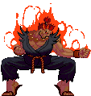

-
Ryu #001

- Japão
- Kyoi no Hado
Quando menino, Ryu era órfão e não tinha lembranças de seus pais. Ele é adotado e criado por Gouken em um dojo isolado e é intensamente treinado no estilo de artes marciais de Gouken, Kyoi no Hado ou "Punho do Nada". Alguns anos depois, Gouken começou a treinar o filho de seu melhor amigo, Ken Masters, no dojo. Ryu e Ken rapidamente se tornaram bons amigos e treinavam juntos diariamente.
-
Ken #002
- Estados Unidos
- Kyoi no Hado
Ken nasceu em uma família rica, seu pai é dono de uma conhecida rede de hotéis. Quando Ken era um adolescente, seu pai decidiu que seu filho precisava aprender disciplina, ou então ele se tornaria mimado e o perseguiria pelo resto de sua vida. Ken é enviado ao Japão para treinar com o velho amigo de seu pai, Gouken. A princípio, Ken hesita e quer voltar para casa, mas acaba começando a respeitar Gouken e as artes marciais. Ken logo se torna um bom amigo e parceiro de treinamento do filho adotivo de Gouken, Ryu.
-
Gouken #003
- Japão
- Kyoi no Hado
Gouken é o mestre original de Ryu e Ken, bem como o irmão mais velho e ex-parceiro de treino de Akuma. Gouken e Akuma eram aprendizes de Goutetsu, um mestre de artes marciais que ensinou aos irmãos um antigo estilo de assassinato Ansatsuken. Akuma abraçou a natureza assassina desse estilo o Satsui no Hado e eventualmente, matou Goutetsu em combate após dominar a técnica proibida do "Shun Goku Satsu". Gouken refinou as técnicas desse estilo assassino e as desenvolveu em uma arte marcial pura, chamada Kyoi no Hado ou "Punho do nada", que ele então ensina aos seus dois alunos: Ryu e Ken.
-
Akuma #004
- Japão
- Satsui no Hadou
Akuma (conhecido como Gouki no Japão) treinou com Goutetsu junto com seu irmão, Gouken. Goutetsu ensinou-lhes Ansatsuken (Punho Assassino), que é uma mistura de karatê, judô e koppo. À medida que os irmãos progrediam sob os ensinamentos de Goutetsu, surgiu uma disputa sobre a verdadeira natureza do Ansatsuken e o caminho para dominá-lo. Gouken, incapaz de aceitar a natureza violenta de Ansatsuken, deixou Goutetsu para começar seu próprio dojo. Akuma continuou os ensinamentos de Goutetsu e jurou usar o Ansatsuken como deveria.
-
Chun-li #005
- China
- Kung Fu
O pai de Chun-Li foi morto por Bison, então ela se juntou à Interpol para obter recursos para encontrá-lo e levá-lo à justiça. Seu professor de artes marciais (e um velho amigo de seu pai), Gen, dá a ela uma pista sobre quem pode ter matado seu pai. Ela começa a investigar o misterioso sindicato do crime, Shadaloo, e eventualmente confronta M. Bison. Ela exige que ele conte o que aconteceu com seu pai, mas ele a ataca e a derrota rapidamente. Ele diz a ela que a matará se ela o atacar novamente e voar em sua aeronave. Com lágrimas nos olhos, Chun-Li jurou vingança.
-
Guile #006
- Estados Unidos
- Técnica Militar
Quando Guile era estagiário na Força Aérea dos Estados Unidos, ele se tornou um bom amigo de seu oficial superior, Charlie Nash. Guile pediu que Charlie lhe ensinasse sua forma única de luta, e Charlie concordou em fazê-lo. Guile aprendeu o estilo de luta de Charlie, mas seu temperamento explosivo o impediu de dominar a arte.
-
Charlie #007
- Estados Unidos
- Técnica Militar
Charlie era o oficial superior de Guile na Força Aérea dos Estados Unidos e também ensinou a Guile a maioria de seus movimentos de marca registrada. Membro de uma "equipe militar secreta de elite", Charlie co-pilotou uma missão especial na Tailândia junto com Guile. No entanto, sua missão saiu pela culatra e ambos foram capturados. Eles conseguiram escapar, mas Charlie se convenceu de que o inimigo tinha informações privilegiadas de alguém dentro das forças armadas dos EUA e estava determinado a chegar ao fundo disso, procurando quem estava por trás do incidente na Tailândia.
-
Cammy #008
- Reino Unido
- Técnica Shadaloo
Originalmente uma "Shadaloo Doll", Cammy já foi controlada pela Shadaloo usando o DNA de M. Bison. Na linha do tempo de Street Fighter Alpha 3, Cammy é enviada para assassinar Dhalsim. Em vez disso, Dhalsim usa seus poderes espirituais para torná-la autoconsciente, fazendo-a finalmente perceber que Shadaloo a estava controlando. Suspeitando que estava perdendo o controle sobre Cammy, Bison envia Vega para observá-la. Quando Vega a confronta, ele diz que ela era um experimento" e não era mais necessária e a ataca, mas Cammy o derrota.
-
Fei Long #009
- Hong Kong
- Hitenryu Kung Fu
Fei Long desenvolveu sua própria forma de arte marcial chamada Hitenryu Kung Fu. Enquanto lutava nas ruas para aprimorar suas habilidades, ele foi notado por um diretor de cinema e logo se tornou uma sensação internacional, aparecendo em uma série de filmes de ação. Depois que ele se tornou famoso, ele foi notado pela organização criminosa Shadaloo, que tentou recrutá-lo à força, mas ele recusou. Após o segundo torneio do Street Fighter, Fei Long decidiu que preferia a coisa real às cenas de luta encenadas e coreografadas nos filmes e desistiu de sua carreira no cinema. O design de Fei Long é modelado após a lenda das artes marciais, Bruce Lee.
-
Dhalsim #010
- India
- Yoga
Vindo de Kerala, na Índia, Dhalsim é um mestre de um misterioso estilo de luta "Yoga". Dhalsim usa seus poderes de Yoga para lutar por dinheiro para ajudar os pobres. Ele é um indivíduo estóico, humilde e autodisciplinado, mas também pode ser sério e severo quando o tempo exige.
-
Blanka #011
- Brasil
- Selva/Capoeira
Blanka é um homem selvagem com pele verde e tem a capacidade de gerar eletricidade. Blanka era originalmente um menino chamado Jimmy, que sofreu um acidente de avião e acabou na selva amazônica. O avião foi abatido pela Shadaloo quando chegou muito perto de uma base. Por muitos anos, Blanka foi criado por animais. Um dia ele salvou a vida de Dan Hibiki na selva. Eles se tornaram amigos e Blanka partiu para ver o mundo exterior.
-
Dee Jay #012
- Jamaica
- Kickboxing
Dee Jay é um kickboxer jamaicano que luta com ritmo musical e é conhecido como o "Cometa do Sul". Durante os eventos de Street Fighter Alpha 3, ele anonimamente desafiou e derrotou Adon, que usa o estilo rival de kickboxing Muay Thai. Depois de derrotá-lo, Dee Jay voltou sua atenção para o Deus do Muay Thai, Sagat. Sagat, agora um executor da Shadaloo para M. Bison, não levou o alegre jamaicano a sério. Dee Jay conseguiu derrotar Sagat, aumentando a seqüência de derrotas de Sagat na época. Após a vitória de Dee Jay sobre Sagat, M. Bison se interessou por ele e ofereceu-lhe um cargo na Shadaloo, mas Dee Jay recusou. Após o torneio, Dee Jay voltou para a Jamaica e criou algumas novas músicas inspiradas em suas batalhas anteriores. Suas novas músicas chamaram a atenção de um produtor musical, que acabou oferecendo a Dee Jay um contrato com uma gravadora.
-
T.Hawk #013
- México
- Thunderfoot
Thunder Hawk é o maior guerreiro da orgulhosa tribo Thunderfoot que vive no México perto das planícies de Monte Albán. Quando ele era criança, a tribo Thunderfoot estava sendo expulsa de suas terras pela Shadaloo. Alguns dos membros da tribo resistiram e lutaram contra a Shadaloo, mas muitos foram mortos. O pai de T. Hawk, Arroyo Hawk, também foi morto por M. Bison. Depois de aprender sobre Shadaloo, T. Hawk jurou vingança contra Bison por suas ações e recuperar a terra que foi tirada de seu povo. Muitos membros da tribo também desapareceram e T. Hawk assumiu a responsabilidade de encontrá-los. Outra guerreira da tribo Thunderfoot, Lily, aparece em Street Fighter 6. Muitos dos ataques e movimentos especiais de Lily são inspirados nos de T. Hawk.
-
Sakura #014
- Japão
- Gatsuy no Hado
Depois de assistir Ryu vencer o primeiro torneio World Warrior, Sakura se tornou sua fã número 1. Ela começou a lutar nas ruas (e imitando o estilo de luta de Ryu) durante os eventos das Rival Schools. Ela tem uma amiga chamada Kei Chitose que frequenta a mesma escola e às vezes viaja com Sakura quando ela luta. Ela também tem um irmão chamado Tsukushi.
-
E.Honda #015

- Japão
- Sumô
E. Honda começou seu treinamento no sumô ainda criança e estava determinado a se tornar o maior lutador de sumô de todos os tempos. Ele finalmente alcançou o título de "Ozeki". Honda ficou chateado porque o resto do mundo não via a luta de sumô com a reverência dos japoneses. Ele entrou no segundo torneio World Warrior com a intenção de mostrar a todos que os lutadores de sumô estão entre os maiores lutadores do mundo.
-
Zangief #016

- Russia
- Wrestling
Zangief é um lutador russo conhecido como "The Red Cyclone". Ele impressionou tanto o presidente da (então) URSS, Gorbachev, que foi contratado pelo governo e logo se tornou um herói nacional. Sob as ordens de Gorbachev, Zangief foi enviado para combater as forças da Shadaloo, que está começando a espalhar sua corrupção na Rússia. Zangief encontrou muitos lutadores pelo caminho, e acabou fazendo amizade com alguns deles, como E. Honda e R. Mika.
-
Vega #017
- Espanha
- Ninjutsu
Vega nasceu em uma família nobre privilegiada. Por razões desconhecidas, o status de sua família diminuiu, fazendo com que a bela mãe de Vega se casasse novamente por segurança financeira. Ele não gostava do padrasto e o achava feio. Conforme Vega amadureceu, ele estudou touradas e mais tarde foi para o Japão para estudar sua outra paixão, Ninjutsu, um estilo que ele acreditava que combinaria bem com sua graça e agilidade naturais. Combinando touradas e Ninjutsu, Vega sentiu que suas habilidades de luta estavam completas e se juntou a um circuito de luta em jaulas subterrâneas. Ele rapidamente se tornou um dos melhores.
-
Balrog #018
- Estados Unidos
- Boxing
Balrog é um ex-campeão de boxe. Ele foi banido permanentemente do boxe depois de ferir muitos de seus oponentes com movimentos ilegais (principalmente sua cabeçada) e acidentalmente matar um. Ainda em busca do título de lutador mais forte do mundo, ele passou a lutar nas ruas. As habilidades de luta de Balrog foram mais tarde notadas por M. Bison e desde então se juntou à Shadaloo como um dos capangas de Bison, trabalhando seu caminho desde os escalões inferiores. Armado com os socos mais fortes do mundo, sua ambição continuou.
-
Sagat #019
- Thailândia
- Muay Thai
Pesando 330 libras e medindo 7'5" de altura, Sagat é conhecido como "O Rei/Deus do Muay Thai". Sagat ganhou o título quando adolescente e se tornou um herói nacional na Tailândia quando amadureceu. Ele defendeu seu título de um lutador chamado Gou Hibiki (pai de Dan) Sagat perdeu o uso do olho direito na luta, mas Gou Hibiki perdeu a vida. Anos depois realizou o primeiro torneio World Warrior para provar que era o lutador mais forte do mundo. Nessa época também treinou Adon, lutador de Muay Thai que também entrou no torneio. Apenas um lutador conseguiu alcançar Sagat, um jovem artista marcial chamado Ryu. Foi uma luta acirrada, mas Ryu conseguiu derrotar Sagat depois que ele foi consumido pelo Satsui no Hadou executou o Metsu Shoruyken, ferindo Sagat criticamente e deixando uma enorme cicatriz em seu peito. Sagat jurou vingança contra Ryu naquele dia. Durante os eventos do SFA2, Sagat desenvolveu um novo movimento para rivalizar com aquele que o marcou; ele o chamou de Golpe do Tigre. Adon zombou de Sagat por perder para Ryu e o desafiou pelo título de Deus do Muay Thai. Sagat não se recuperou totalmente da luta com Ryu e perdeu para Adon. Consumido pela raiva, Sagat decidiu se juntar à organização criminosa Shadaloo, depois que M. Bison lhe ofereceu recursos para encontrar Ryu e fornecer a Sagat uma revanche. Bison admirou o poder de Sagat e o contratou como seu guarda-costas pessoal, e como um dos temidos Quatro Reis Celestiais da Shadaloo.
-
M.Bison #020

- N/A
- Psycho Power
M. Bison é o líder e criador da Shadaloo, uma organização criminosa e militar indescritível. Bison tem trabalhado em uma energia letal e misteriosa que aumenta muito sua habilidade de luta, o que ele chama de "Psycho Power". Ele treinou junto com outros dois alunos desconhecidos e aprendeu o Psycho Power para se tornar mais poderoso e alcançar suas aspirações de dominar o mundo. Bison contratou muitos membros para a Shadaloo, incluindo Sagat, Vega, Balrog, Birdie, C. Jack, Juni, Juli e Cammy.